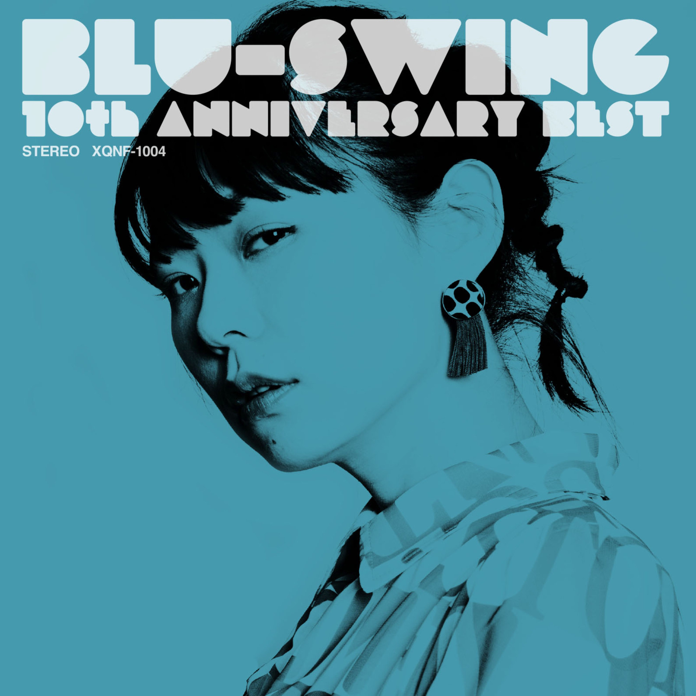

Day 81

BLU-SWING ◆ 10th Anniversary Best ◆ 2019
这张专辑我竟然想不起来是怎么发现的了，好像是油管。BLU-SWING 是一个日本的 Fusion 乐队，名声不显，我之前从没听说过。但是能从专辑名看出来，他们成立时间挺长的了。这张专辑封面我很喜欢，蓝色背景有种 Blue Notes 的感觉，主唱的照片也很酷很好看。
他们的音乐不以人声为中心（可能也是不出名的原因之一），比较偏向爵士。虽然没有朗朗上口的主题旋律，但还是挺好听的。我比较喜欢的有 Sunset 和 Rain。